MATLAB R2026b · Embedded AI tutorial 4
Read Handwritten Digits with a Raspberry Pi 5 Camera Using a Network Trained in MATLAB
This example shows how to train, compress, and deploy a handwritten-digit reader from MATLAB® to a Raspberry Pi® 5. You write a digit on a sheet of paper and hold it in front of the Pi camera, and the Pi reports which digit it is, from 0 to 9. The network runs on the Pi as generated C++ code, with no MATLAB on the board.
The example follows the same workflow as the finger-counting tutorial, with a simpler task and cleaner data: the training images come with Deep Learning Toolbox, so nothing needs to be downloaded. The new part is the bridge between a camera and a data set. A camera sees dark ink on white paper under uneven light, while the training images are white digits on a black background and centered. A short function, preprocessFrame, closes that gap, and it runs in MATLAB and on the Pi in exactly the same way.
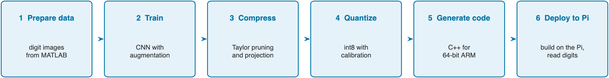
- Prepare Data: load the digit images and split them (
Part1_PrepareData.m). - Train the Network: train a small CNN with image augmentation, test it, and look at it with Grad-CAM (
Part2_TrainNetwork.m). - Compress: optionally explore how far the network can be compressed (
Part3a_ExploreCompression.m), then apply Taylor pruning and projection, each followed by fine-tuning (Part3_CompressNetwork.m). - Quantize: convert the network to 8-bit integers (
Part4_QuantizeNetwork.m). - Generate Code: prepare camera frames, generate C++ code, and verify it against MATLAB (
Part5_GenerateCode.m). - Deploy and Read Digits: measure the accuracy on your own handwriting, build the program on the Pi, and run it on the camera (
Part6_DeployToRaspberryPi.m).
Products: Deep Learning Toolbox, Deep Learning Toolbox Model Compression Library, MATLAB Coder, MATLAB Coder Interface for Deep Learning, Embedded Coder, Statistics and Machine Learning Toolbox, and the Raspberry Pi Blockset (from the Add-On Explorer).
Hardware: Raspberry Pi 5 with Raspberry Pi OS or Debian 13 (64-bit), a Raspberry Pi Camera Module, a network connection between the Pi and your computer, white paper, and a thick black marker. The first connection installs a small MATLAB server on the Pi and may ask you to install some Linux packages with raspisetup.
1Prepare Data
The data set that comes with Deep Learning Toolbox has 10,000 grayscale images of handwritten digits, 28 × 28 pixels, 1,000 for each digit. The digits are white on a black background.
dataFolder = fullfile(matlabroot,"toolbox","nnet","nndemos","nndatasets","DigitDataset");
imds = imageDatastore(dataFolder,IncludeSubfolders=true,FileExtensions=".png",LabelSource="foldernames");
[imdsTrain,imdsVal,imdsTest] = splitEachLabel(imds,0.7,0.15,"randomized");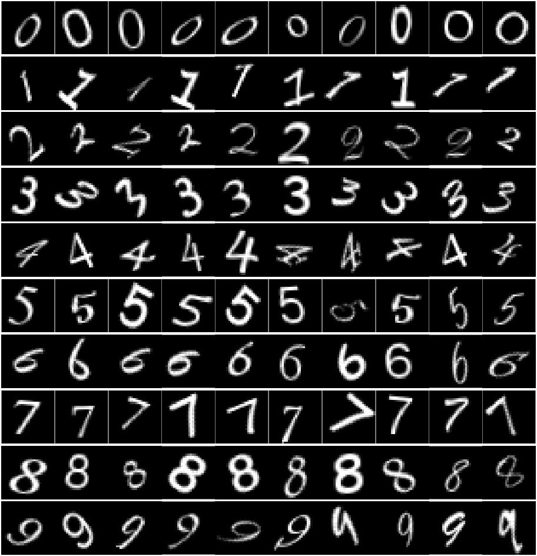
Set Images
____________ ______
"Training" 7000
"Validation" 1500
"Test" 1500
The set does not say who wrote each digit, so writers can appear in more than one of the three sets, and the test accuracy is a little better than it would be for a stranger's handwriting. Part 6 measures the accuracy on your own writing.
2Train the Network
The network has three convolution blocks. Each one finds simple patterns (strokes, then curves and corners), and each pooling layer halves the width and height. Global average pooling collapses the last feature maps, and a fully connected layer turns them into ten scores.
layers = [
imageInputLayer([28 28 1],Normalization="none")
convolution2dLayer(3,16,Padding="same")
batchNormalizationLayer
reluLayer
maxPooling2dLayer(2,Stride=2)
convolution2dLayer(3,32,Padding="same")
batchNormalizationLayer
reluLayer
maxPooling2dLayer(2,Stride=2)
convolution2dLayer(3,64,Padding="same")
batchNormalizationLayer
reluLayer
globalAveragePooling2dLayer
dropoutLayer(0.2)
fullyConnectedLayer(10)
softmaxLayer];The helper plotImageNetworkArchitecture draws each layer as a box. The color shows the layer type, the height grows with the number of channels, and the output size of every layer is printed below it.
plotImageNetworkArchitecture(dlnetwork(layers),[28 28 1],"Digit-reading CNN on the 28 × 28 image");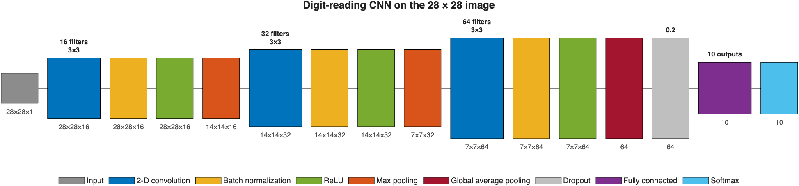
The first convolution makes 16 feature maps from the 28 × 28 image, each max pooling layer halves the width and height (28 → 14 → 7), and global average pooling collapses the last 7 × 7 × 64 maps into 64 numbers, from which the fully connected layer computes the ten scores.
A digit that you write on paper and hold in front of a camera is a little rotated, slanted, larger or smaller, and not perfectly centered. Random rotation, shearing, scaling, and shifting of the training images teach the network to cope with this.
augmenter = imageDataAugmenter(RandRotation=[-12 12],RandXShear=[-12 12], ...
RandScale=[0.8 1.2],RandXTranslation=[-3 3],RandYTranslation=[-3 3]);
dsTrain = augmentedImageDatastore([28 28 1],XTrain,labelsTrain,DataAugmentation=augmenter);
[net,info] = trainnet(dsTrain,layers,"crossentropy",options);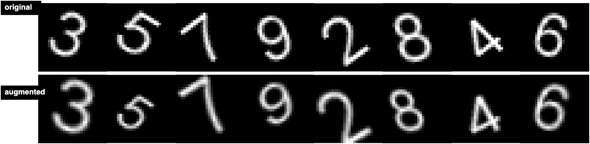
MATLAB opens the training-progress window while trainnet runs. On a laptop CPU, the 30 epochs take about a minute.
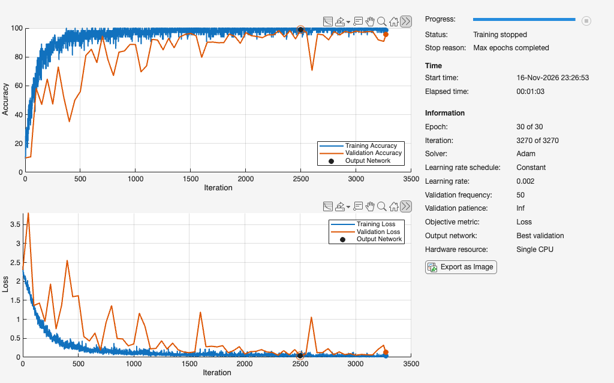
OutputNetwork="best-validation" returns the network at the black dot.accuracyTest = testnet(net,XTest,labelsTest,"accuracy")
predicted = onehotdecode(minibatchpredict(net,XTest),classNames,2);
confusionchart(labelsTest,predicted)accuracyTest = 98.9333 accuracyVal = 98.8667 Accuracy of each digit on the test set (%): 0 1 2 3 4 5 6 7 8 9 100.0 98.0 96.7 100.0 98.7 100.0 100.0 97.3 100.0 98.7
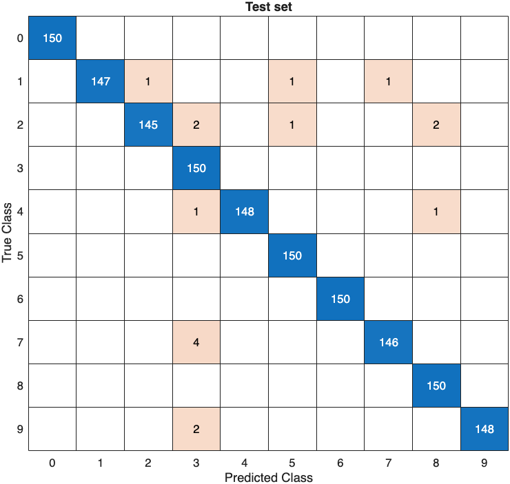
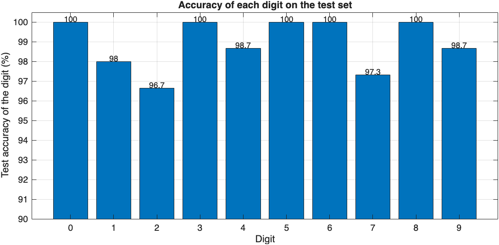
The test accuracy is high because the test images are written in the same styles as the training images. It is not a promise about your handwriting, your pen, and the camera.
Grad-CAM highlights the pixels that raised the score of the predicted class: the network looks at the strokes of the digit.
map = gradCAM(net,XTest(:,:,:,idx),predicted(idx));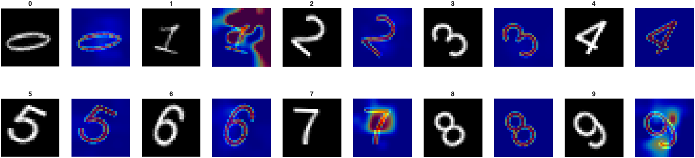
3Compress
Two steps make the network smaller: Taylor pruning removes the convolution filters that matter least, and projection replaces each layer with two smaller layers that keep its principal directions. Each step is followed by fine-tuning with the same augmentation.
Explore How Far the Network Can Be Compressed (Optional)
The optional script Part3a_ExploreCompression.m takes a few minutes and shows how the recipe below was chosen. Deep Network Designer shows a report when you open the network with deepNetworkDesigner(net) and click Analyze for Compression; the helper exportCompressionAnalysis shows the same report in a separate window and saves it as an image.
exportCompressionAnalysis(net,fullfile(projectFolder,"images","compression-analysis.png"))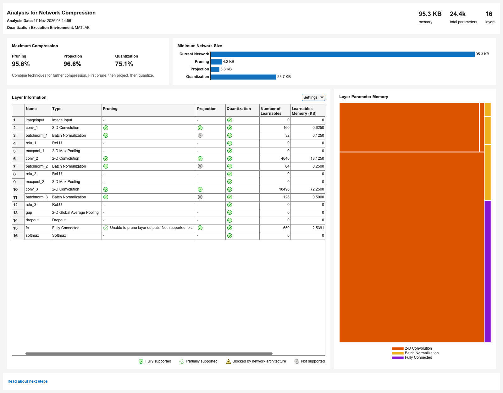
The report estimates that pruning could remove up to 95.6% of the parameter memory, projection up to 96.6%, and int8 quantization 75.1%. These maximums are structural limits: how far each technique could go if the network structure were the only constraint, regardless of accuracy.
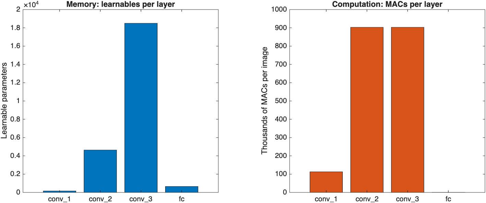
The third convolution layer holds about three quarters of the weights, and the second and third layers do nearly all of the computation, so these are the layers where compression pays off. Projection relies on the observation that the activations of a layer often vary along far fewer directions than the layer has neurons. neuronPCA computes the principal components of each layer's activations over the training data: the faster a curve rises to 100%, the more that layer can be projected without losing information.
npca = neuronPCA(net,mbqTrain);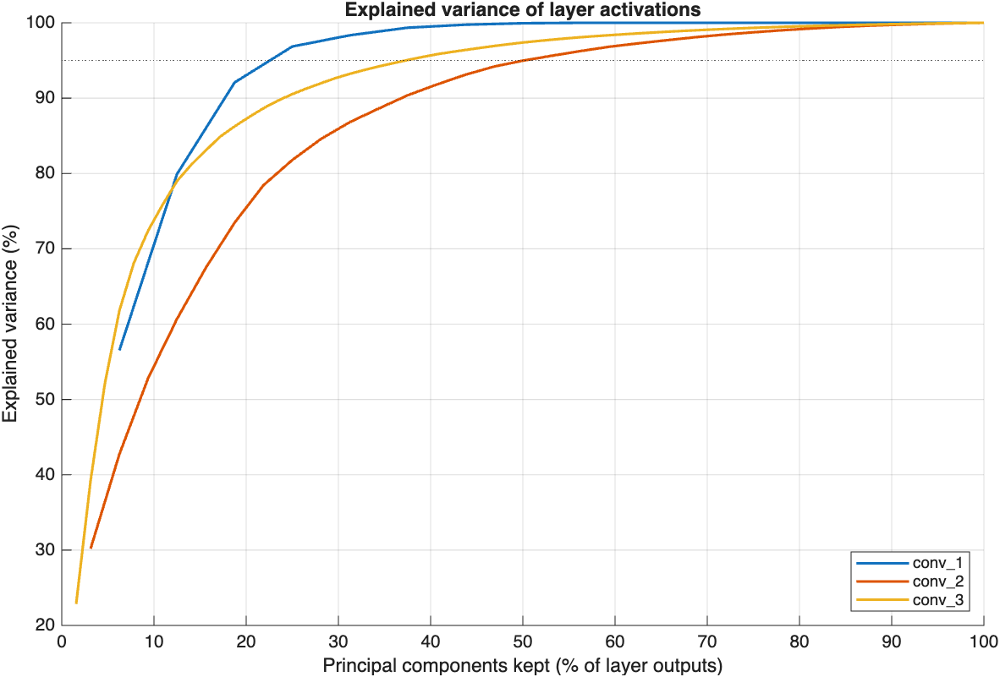
conv_1 reaches 95% of the variance with about a fifth of its directions and conv_3 with about a third, while conv_2 needs about half. The script then applies each technique at five strengths and measures the test accuracy twice: directly ("one-shot") and after 8 epochs of fine-tuning.
prunableNet = accumulateTaylorScores(net,XTrain,labelsTrain);
netPruned = dlnetwork(updatePrunables(prunableNet,MaxToPrune=numToPrune));
netProjected = compressNetworkUsingProjection(net,npca,LearnablesReductionGoal=goal);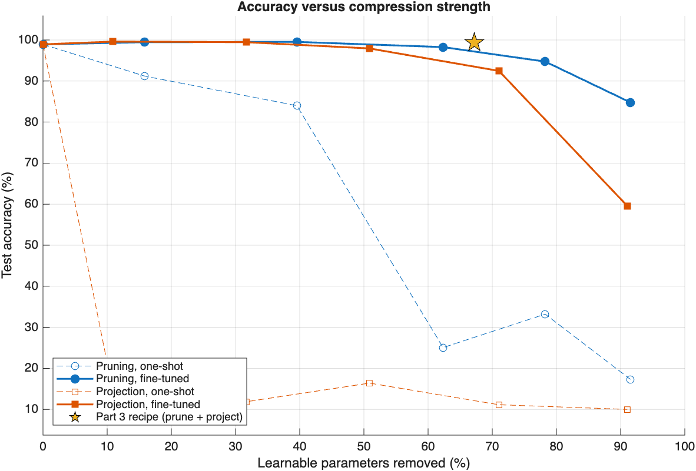
Without fine-tuning, both techniques lose almost all of their accuracy: projection falls to 10–16% even when only 11% of the parameters are removed, and pruning keeps 91% at 16% removed and 25% at 62%. With fine-tuning, pruning keeps 98.3% up to 62% removed and 94.7% at 78%. Projection keeps 99.5% up to 32% and 97.9% at 51%, and then collapses (92.5% at 71% and 59.5% at 91%). Projection breaks down earlier because it approximates every layer at once, while pruning removes whole filters but keeps the remaining ones intact.
Prune and Project the Network
[netPruned,infoPruned] = compressNetworkUsingTaylorPruning(net,XTrain,labelsTrain,"crossentropy",optionsPruning, ...
LearnablesReductionGoal=0.5,LearnablesReductionIncrement=0.05);
netPruned = trainnet(dsTrain,netPruned,"crossentropy",optionsFineTune);
[netProjected,infoProjected] = compressNetworkUsingProjection(netPruned,XTrain,LearnablesReductionGoal=0.3);
netProjected = trainnet(dsTrain,netProjected,"crossentropy",optionsFineTune); Stage Learnables Memory (KB) Test accuracy (%)
__________________ __________ ___________ _________________
Original 23946 93.539 98.93
Pruned 11513 44.973 99.67
Pruned + projected 7864 30.719 99.33
Projection with a goal of 50% reduced the accuracy to 96.8% in a first try, so this example removes a gentler 30%. Fine-tuning is also extra training, so a compressed network can score as well as the original, or even a little better.
4Quantize
Quantization stores the weights and activations as 8-bit integers instead of 32-bit floating-point numbers. A calibration step runs training images through the network to find the range of values in every layer.
quantObj = dlquantizer(netCompressed,ExecutionEnvironment="MATLAB");
prepareNetwork(quantObj);
calibrate(quantObj,augmentedImageDatastore([28 28 1],XTrain(:,:,:,1:3:end)));
netQ = quantize(quantObj,ExponentScheme="histogram"); Stage Learnables Parameter memory (KB) Test accuracy (%)
Original (float32) 23946 93.54 98.93
Pruned + projected (float32) 7864 30.72 99.33
Pruned + projected + quantized (int8) 7681 7.93 97.80
agreement = 98.2 % % of test images where the int8 and float32 networks give the same answer
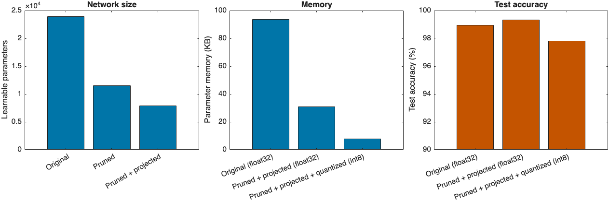
Run Part3a_ExploreCompression.m again to place this result in the full design space: every option from the sweep at float32 and at the estimated int8 size, and the path taken through Steps 3 and 4.
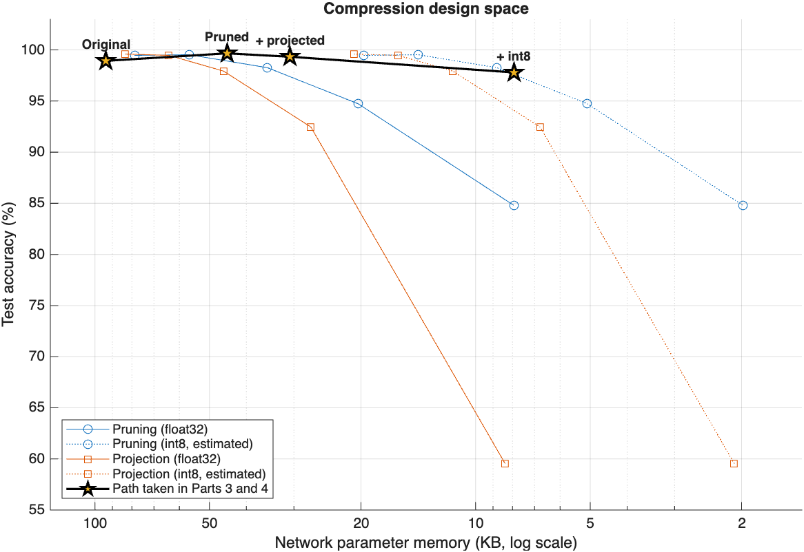
Moving to the right means a smaller network. The path of this example stays near the top of the chart: the int8 network needs 7.9 KB, the same as the float network that was pruned by 91% in the sweep, but it keeps 97.8% accuracy instead of 84.8%.
5Generate Code
The Raspberry Pi does not run MATLAB. MATLAB Coder translates a MATLAB function, together with the quantized network, into C++ code that the Pi compiles and runs on its own. Code generation starts from one function, digitDetect. It takes a 480 × 640 camera frame, prepares it with preprocessFrame, runs the network, and returns the digit and the ten probabilities. If nothing is written in the middle of the frame, it returns −1: "no digit".
function [digit,probabilities] = digitDetect(frame) %#codegen
persistent net
if isempty(net)
net = coder.loadDeepLearningNetwork("models/netQ.mat");
end
x = preprocessFrame(frame); % 28 x 28, ink = 1, paper = 0
if ~any(x(:)) % blank paper
digit = int32(-1);
probabilities = zeros(10,1,"single");
return
end
probabilities = extractdata(predict(net,dlarray(x,"SSCB")));
[~,k] = max(probabilities);
digit = int32(k - 1);
endThe input is labeled "SSCB" (spatial, spatial, channel, batch): code generation for quantized pooling layers requires the batch dimension, even for a single image.
Prepare the Camera Frame
The camera sees dark ink on white paper, but the network was trained on white digits on a black background, and on digits that are centered. preprocessFrame bridges the difference in four steps. It keeps the centered 448 × 448 square of the frame, and averages 16 × 16 blocks of pixels to get 28 × 28. It estimates the paper with a morphological closing (a maximum filter followed by a minimum filter): the closing removes the thin dark strokes of the ink but keeps a smooth change of the light across the paper, so a shadow or a gradient is not mistaken for ink. The paper becomes 0 and the ink becomes values up to 1. Finally, it moves the center of mass of the ink to the center of the image. It uses only basic array operations, so MATLAB and the Pi prepare the images in exactly the same way.
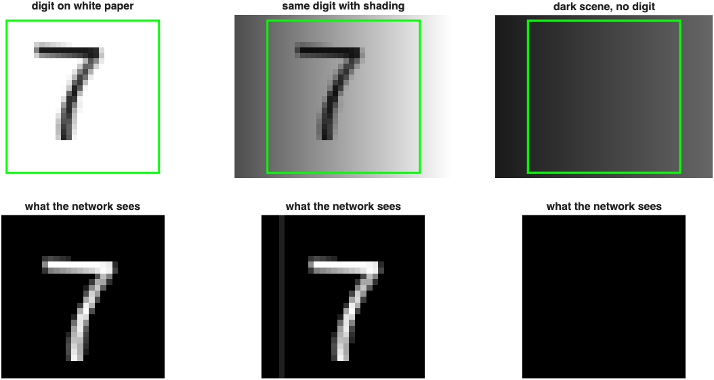
To test the complete function on all 1,500 test digits, each digit is enlarged 16 times, drawn as dark ink on white paper, and placed in the center of a 480 × 640 frame. Then build a MEX function with the same deep learning settings, and compare it with MATLAB:
mexCfg = coder.config("mex");
mexCfg.DeepLearningConfig = coder.DeepLearningConfig(TargetLibrary="none");
mexCfg.LargeConstantGeneration = "KeepInSourceFiles";
codegen -config mexCfg digitDetect -args {zeros(480,640,3,"uint8")} -o digitDetect_mexaccuracyFunction = 95.9333 % the whole function on the test frames digitBlank = -1 % a blank sheet gives "no digit" digitAgreement = 1 % the MEX function gives the same digit for every frame maxDifference = 0 % and the same probabilities
The whole function scores 95.9%, a little less than the network alone: turning a digit into a photograph and back changes a few pixels. Then generate the C++ library for a 64-bit ARM processor. TargetLibrary="none" produces plain C++ without third-party libraries, and LargeConstantGeneration="KeepInSourceFiles" puts the network weights in the source files.
cfg = coder.config("lib");
cfg.TargetLang = "C++";
cfg.GenCodeOnly = true;
cfg.DeepLearningConfig = coder.DeepLearningConfig(TargetLibrary="none");
cfg.LargeConstantGeneration = "KeepInSourceFiles";
cfg.HardwareImplementation.ProdHWDeviceType = "ARM Compatible->ARM 64-bit (LP64)";
codegen -config cfg digitDetect -args {zeros(480,640,3,"uint8")} -d codegen/lib -reportextern void digitDetect(const unsigned char frame[921600], int *digit,
float probabilities[10]);6Deploy and Read Digits
Connect to the Raspberry Pi
Install the Raspberry Pi Blockset from the Add-On Explorer. Define the connection details in the Command Window, so that your password is never saved in a script, and connect with raspi.
piAddress = "raspberrypi.local";
piUser = "pi";
piPassword = "..."; % type your password in the Command Window only
r = raspi(piAddress,piUser,piPassword)Prepare the Paper and the Camera View
Write a digit in the middle of a white sheet with a thick black marker or a thick dark pen, as large as the green square allows. The network sees only the centered square of the camera frame. Thin pencil strokes, a small digit, or a sheet that is moved make the result worse. Light the paper evenly and hold it still.
cam = cameraboard(r,"Resolution","640x480");
frame = snapshot(cam);
imshow(frame)
rectangle(Position=[97 17 448 448],EdgeColor="g",LineWidth=3)
imshow(preprocessFrame(frame)) % what the network seesMeasure Your Accuracy
The test set of Step 2 contains digits written like the training digits. Your handwriting, your pen, and the camera are different. This section of Part6_DeployToRaspberryPi.m measures how well the network reads your digits: for each digit from 0 to 9, it counts you down for 8 seconds, so that you can put the next sheet in the green square, and takes five pictures. The pictures are read with the MEX function from Step 5, and the section prints the accuracy and draws a confusion chart.
This tutorial does not give a number for the accuracy on a camera. It depends on your pen, your handwriting, the paper, and the light, and the reference run of this tutorial did not measure it. Measure it yourself with this section before you rely on the program. Frames from a camera can differ from the training images in ways that the preparation of the frame cannot fully remove.
Build the Program on the Pi
digitReaderApp is the program for the Pi. It creates the camera, then grabs frame after frame and calls digitDetect on each, until it is stopped.
function digitReaderApp() %#codegen
r = raspi;
cam = cameraboard(r,"Resolution","640x480");
k = int32(0);
while true
k = k + 1;
frame = snapshot(cam);
t0 = tic;
[digit,probabilities] = digitDetect(frame);
ms = toc(t0)*1000;
if digit < 0
fprintf("frame %2d: no digit (%5.1f ms)\n",k,ms);
else
fprintf("frame %2d: digit %d (confidence %3.0f%%, %5.1f ms)\n",k,digit,100*max(probabilities),ms);
end
pause(0.1); % about 10 frames per second, and no busy loop
end
endConfigure code generation for a stand-alone program on a 64-bit Raspberry Pi. MATLAB generates the C++ code on your computer, copies it to the Pi, and builds it there with the compiler on the Pi. The board type must match the operating system: Raspberry Pi (64bit) for a 64-bit system, and Raspberry Pi for a 32-bit system. MATLAB warns that the program does not end: that is intended.
hw = coder.hardware("Raspberry Pi (64bit)");
hw.DeviceAddress = r.DeviceAddress; hw.Username = piUser; hw.Password = piPassword;
hw.BuildDir = "/home/" + piUser + "/MATLAB_ws/digitreader";
cfg = coder.config("exe");
cfg.Hardware = hw;
cfg.GenerateExampleMain = "GenerateCodeAndCompile";
cfg.DeepLearningConfig = coder.DeepLearningConfig(TargetLibrary="none");
cfg.LargeConstantGeneration = "KeepInSourceFiles";
codegen -config cfg digitReaderApp -d codegen/pi -reportRun It on the Camera
Start the program on the board for 20 seconds, show a digit to the camera, and change it every few seconds. The timeout -s KILL 20 command stops the program after 20 seconds, and stdbuf -oL sends each line as soon as it is printed.
program = strtrim(string(system(r,"find /home/" + piUser + "/MATLAB_ws/digitreader -name digitReaderApp.elf | head -1")));
output = system(r,"cd '" + fileparts(program) + "' && stdbuf -oL timeout -s KILL 20 ./digitReaderApp.elf 2>/dev/null; true");
system(r,"pkill -9 -f '[d]igitReaderApp.elf'; true"); % make sure that no copy of the program keeps running
disp(output)frame 1: no digit ( 0.8 ms) frame 2: no digit ( 0.7 ms) frame 3: no digit ( 0.7 ms) ...
The first lines are from a run in a dark scene without a digit, which gives "no digit". When a digit is in the square, a line has the form frame 12: digit 7 (confidence 97%, 3.1 ms), with the digit, the confidence, and the time. With a digit, the preparation of the frame and the network take about 3 ms on the Pi 5, so the loop is limited by the camera and the pause, at about 10 frames per second.
To use it live without a time limit, open a terminal on your computer, log in to the Pi with ssh, go to the program folder, and start ./digitReaderApp.elf 2>/dev/null. Each line appears while the program runs, and Ctrl+C stops it.
The program is small, and it uses little memory:
programKB = 162.8 peakMemory = VmHWM: 28048 kB % includes the camera libraries
Things that make it worse. A thin or light pen, a digit that does not fill the green square, a sheet that moves, strong shadows across the paper, and other dark marks in the square (a fold, a printed line, the edge of the sheet) can all be read as strokes of a digit. Digits that look alike (1 and 7, 4 and 9, 3 and 5) are the most likely to be confused. Blank paper gives "no digit".
Next Steps
- Measure and improve: measure your accuracy with the last section of Part 6, look at the confusion chart, and find out whether the pen, the light, or the size of the digit is the problem. Record your own digits with the Pi camera and add them to the training data to close the gap.
- More training data: train on the 70,000 images of the MNIST data set, which has many more writers.
- Digits in a row: read a number with several digits by splitting the frame into cells.
- Transfer learning: start from a pretrained network (a support package in the Add-On Explorer) for a harder task, such as letters.
See Also
raspi · cameraboard · trainnet · testnet · imageDataAugmenter · gradCAM · compressNetworkUsingTaylorPruning · compressNetworkUsingProjection · dlquantizer · codegen · coder.hardware · coder.loadDeepLearningNetwork